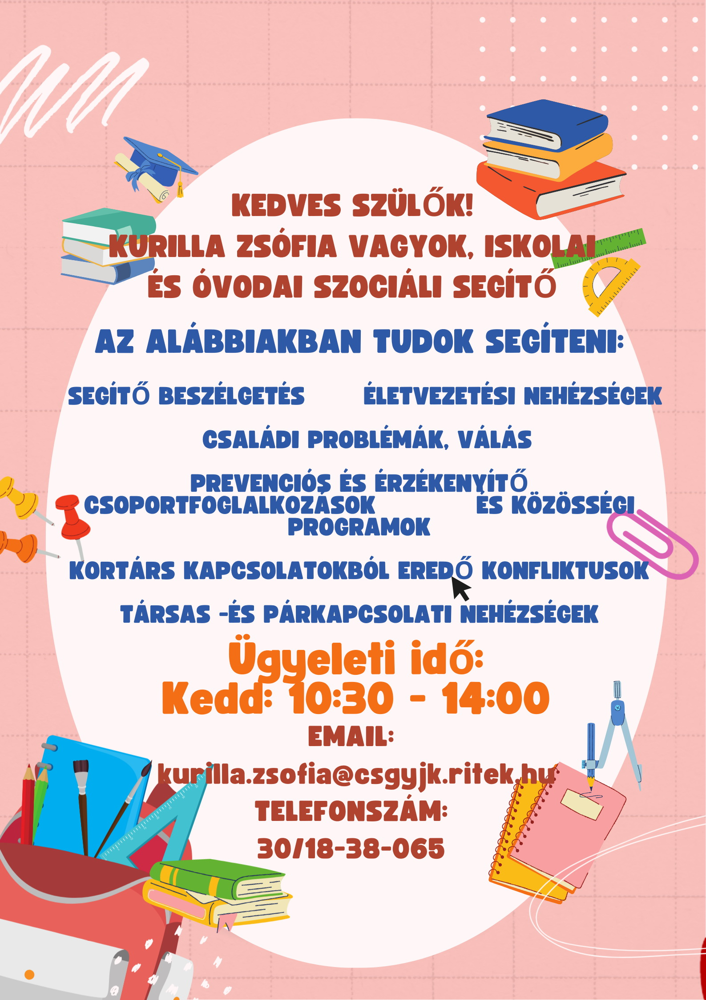

Zoltánfy István Iskola
Szociális segítő
Iskolánk szociális segítője támogatást nyújt a tanulóknak és a családoknak szociális jellegű nehézségeik megoldásában.
Miben segíthet?
- Szociális juttatások és támogatások igénylése
- Kapcsolattartás a gyermekvédelmi intézményekkel
- Tájékoztatás szociális ellátásokról
- Krízishelyzetekben való segítségnyújtás
- Együttműködés az iskolapszichológussal és a pedagógusokkal
Az iskolapszichológus és a szociális segítő közösen segítenek a tanulóknak és a szülőknek — a segítségnyújtás ingyenes és önkéntes.
